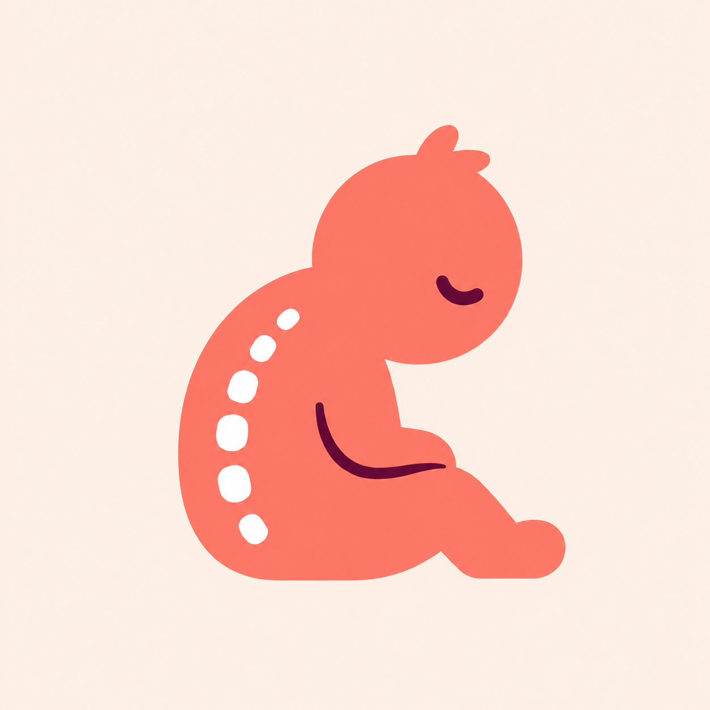

slouchy
A tiny menu bar app that checks your camera every few minutes and calls you out when you slouch.
Download for MacFor Apple Silicon Macs
Getting set up
- Open the DMG and drag Slouchy into Applications.
- First open: macOS says it "could not verify" Slouchy — click Done, then go to System Settings → Privacy & Security and click Open Anyway. (One time only — Slouchy is a tiny indie app, not notarized by Apple.)
- Slouchy appears in your menu bar and walks you through activation — then allow the camera and you're done.
- Sit tall. The turtle 🐢 is watching.